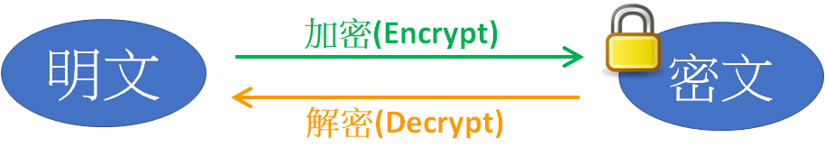
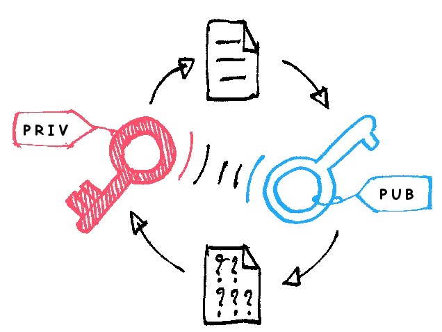

在早期，密碼學(Cryptography)是泛指隱藏訊息(hiding information)的方法，背後相關的知識包含數學、電腦科學(Computer science)及工程學等等，但時至今日，密碼學除了隱藏訊息之外，也同樣注重資訊安全屬性中的資訊完整性與不可抵賴性。
資訊完整性可透過驗算訊息驗證碼(如雜湊值或 checksum 等)來確認訊息沒有被人竄改過，而不可抵賴性則可以透過數位簽章的方式來驗證，下面來詳細說明。
 Photo by Towfiqu barbhuiya on Unsplash
Photo by Towfiqu barbhuiya on Unsplash
加密演算法介紹
加密演算法是指訊息交換的雙方透過約定的密鑰(key)對訊息加密，原始的訊息(明文，plaintext)經過加密後會變成密文(cyphertext)，密文只有透過密鑰才可以還原回可閱讀的明文，因此可以放心透過網路或其他方式進行傳輸。

根據密鑰的特性一般可分作 對稱式加密演算法 及 非對稱式加密演算法，非對稱式加密演算法是指訊息傳遞者會產生一對 公鑰(public key) 及 私鑰(private key)。
1. 對稱式加密演算法
訊息交換雙方共享一組密鑰(key)，這密鑰就相當於兩人共享的秘密(shared secret)，沒有第三者知道。
當訊息要由A君傳送給B君時，A君會使用共享的密鑰對訊息進行加密，然後將加密後的密文傳遞給B君，B君再透過兩人共享的密鑰對密文進行解密，就可以取得明文的內容。
目前常見的對稱式加密演算法有一般網頁瀏覽時SSL/TLS加密使用的AES加密演算法，在 SSL/TLS handshake 時，瀏覽器跟網站伺服器間會協商出一個本次瀏覽期間使用的共享密鑰，在這次瀏覽期間使用的網頁封包都會透過這組密鑰進行加密。
2. 非對稱式加密演算法
明文透過公鑰加密變成密文後，需要透過對應的私鑰進行解密才能還原回明文；相反的，如果明文是透過私鑰進行加密變成密文，則需要透過對應的公鑰進行解密才能還原成明文。
 圖片來源: 維基百科
而公私鑰的保存依照字面上的意思，私鑰需要由訊息傳遞者自己保存好，不能被別人知道(用以確保訊息是本人發送)，而公鑰顧名思義則是需要公開給所有人知道，一般的應用會透過可信任的第三方來保管所有訊息傳遞者的公鑰，比如政府的自然人憑證或健保卡憑證都是由政府建置所謂的公開金鑰基礎建設 (英語：Public Key Infrastructure，縮寫：PKI)，透過 PKI ，我們就可以取得使用者的的公鑰來解密訊息。
而上面我們提到非對稱式加密演算法的加解密特性與公私鑰的保管性質，就可以進行 數位簽章(確保是本人) 與 訊息保密 的動作。
- 數位簽章： 透過私鑰對訊息進行加密後傳送，所有人都可以透過在PKI取得訊息傳遞者的公鑰，如果解密可以成功就代表是本人傳送的(因為私鑰只有本人有)。
- 訊息保密： 如果我們今天要傳遞訊息給特定的使用者A君，然後希望其他人都無法知道訊息的內容，則可以透過 PKI 取得 A君的公鑰，對訊息加密後進行傳輸，儘管訊息傳遞過程中間的人(比方説郵差)有經手這則訊息，但因為對應的私鑰只有A君本人有，所以郵差先生就無法解密而得知訊息的內容。